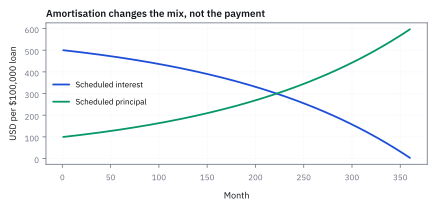
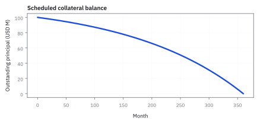
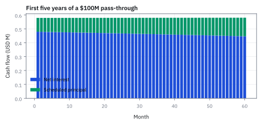
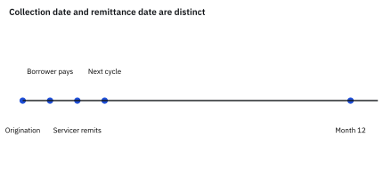

22.1 Mortgage Mathematics and Pass-Throughs
เริ่มจากค่างวดบ้านหนึ่งหลัง แล้วค่อยเห็นว่า MBS ส่งเงินให้คนลงทุนอย่างไร
กู้ซื้อบ้าน \$100,000 อัตราดอกเบี้ย 8.125% ต่อปี ผ่อนชำระเท่ากันทุกเดือน 30 ปี (360 งวด) ก่อนรวมเป็นตราสาร mortgage-backed security (MBS) ค่างวดรายเดือนต้องจ่ายเท่าใด และงวดแรกตัดเงินต้นกี่ดอลลาร์?
เฉลย: ค่างวดรายเดือนคือ \$742.50 โดยในงวดแรกเป็นดอกเบี้ย \$677.08 และตัดเงินต้นได้เพียง \$65.41 (8.81% ของค่างวด) ยอดหนี้คงเหลือสิ้นงวดแรกจึงยังค้างอยู่สูงถึง \$99,934.59
คำที่ต้องรู้ก่อนเปิดตารางเงินกู้
- mortgage
- สินเชื่อที่มีอสังหาริมทรัพย์เป็นหลักประกัน; ในตัวอย่างเป็น United States fixed-rate mortgage ใช้เป็น collateral ของ MBS
- amortisation
- การผ่อนชำระเป็นงวดที่ลด outstanding principal ลงตามเวลา ใช้สร้าง schedule ของ cash flow ที่ตรวจได้
- principal
- ยอดเงินกู้คงค้างที่ borrower ต้องคืน หน่วย USD; การคืน principal ลดฐานที่งวดถัดไปใช้คำนวณ interest
- coupon rate
- อัตราดอกเบี้ยตามสัญญาบนยอด principal ใช้คำนวณ interest ของ mortgage ไม่ใช่ yield ของ investor
- mortgage-backed security (MBS)
- หลักทรัพย์ที่มี pool ของ mortgage เป็น collateral ใช้รวม cash flow ของผู้กู้จำนวนมากให้ซื้อขายได้
- pass-through
- MBS ที่ส่ง principal และ interest ที่เก็บได้จาก pool ให้ investor ตามสัดส่วน หลังหัก fee ใช้เป็นรูปแบบพื้นฐานก่อน CMO
- servicing fee
- ค่าตอบแทนผู้เก็บเงิน ส่ง statement และจัดการ borrower โดยหักจาก coupon เพื่อชดเชยต้นทุนการดำเนินงานก่อนส่งต่อ investor
- weighted-average coupon (WAC)
- coupon เฉลี่ยถ่วงด้วย principal ของ mortgage ใน pool ใช้ประมาณ gross interest ของ collateral
- weighted-average maturity (WAM)
- อายุคงเหลือเฉลี่ยถ่วงด้วย principal ใช้อธิบาย horizon ของ pool เพื่อประเมินกรอบเวลาชำระคืน
- collateralized mortgage obligation (CMO)
- โครงสร้างที่จัดลำดับ principal ของ mortgage pool ใช้ย้าย timing risk ระหว่าง tranche
- adjustable-rate mortgage (ARM)
- mortgage ที่ coupon ปรับตามดัชนีอ้างอิง ใช้เตือนว่า cash-flow rules ต่างจาก fixed-rate loan
- conditional prepayment rate (CPR)
- อัตรา prepayment รายปีแบบ conditional ใช้สร้าง unscheduled principal รายเดือน
- Public Securities Association (PSA) benchmark
- มาตรฐาน scenario ของ CPR ใช้สื่อสมมติฐาน prepayment ระหว่างผู้ซื้อขาย
- principal-only (PO)
- strip ที่รับ principal เท่านั้น ใช้วัด exposure ต่อเวลาคืนเงินต้น
- interest-only (IO)
- strip ที่รับ interest เท่านั้น ใช้วัด exposure ต่อ balance ที่ยังคงอยู่
- Federal Housing Administration (FHA)
- หน่วยงานรัฐบาลสหรัฐฯ ที่ค้ำประกันสินเชื่อบ้าน ใช้กำหนดมาตรฐาน mortgage แบบผ่อนชำระ 30 ปีเพื่อสร้างเสถียรภาพให้ตลาดที่อยู่อาศัย
- asset-backed security (ABS)
- ตราสารหนี้ที่หนุนหลังด้วยกลุ่มสินทรัพย์หรือลูกหนี้เงินกู้ ใช้ระดมทุนและกระจายความเสี่ยงสู่ตลาดทุน
สัญกรณ์และหน่วย
| สัญลักษณ์ | ความหมาย | หน่วย |
|---|---|---|
| $B_t$ | outstanding principal หลังจ่ายงวดที่ $t$ | USD |
| $B_0$ | principal เริ่มต้นของ mortgage หรือ pool | USD |
| $c$ | gross mortgage coupon แบบ annual nominal rate | ต่อปี |
| $r=c/12$ | อัตราดอกเบี้ยต่อเดือน | ต่อเดือน |
| $N$ | จำนวนงวดทั้งหมด | เดือน |
| $A$ | scheduled monthly payment | USD ต่อเดือน |
| $I_t,P_t$ | scheduled interest และ scheduled principal ในงวด $t$ | USD ต่อเดือน |
| $s$ | servicing fee rate แบบ annual | ต่อปี |
| $C_t$ | cash flow ที่ pass-through ส่งให้นักลงทุน | USD ต่อเดือน |
ที่มาที่ไป: ตลาดที่เกิดจากนโยบายรัฐ
ในปี 1970 หน่วยงานของรัฐบาลสหรัฐฯ ออกตราสารชุดแรกที่ส่งผ่านกระแสเงินจากกลุ่มสินเชื่อบ้าน ไปยังผู้ลงทุนโดยตรง
เป้าหมายเชิงนโยบายคือดึงเงินจากตลาดทุนเข้ามาสู่การปล่อยกู้ซื้อบ้าน ซึ่งทำให้คนซื้อบ้านได้ง่ายขึ้นและลดต้นทุนกู้ยืม
ขนาดของตลาดตราสารหนี้สหรัฐฯ ในไตรมาสที่ 3 ปี 2012 มีมูลค่ารวมสูงถึง \$35.3 ล้านล้านดอลลาร์ โดยเป็นหนี้พันธบัตรรัฐบาล \$10.7 ล้านล้าน (30.4%) หุ้นกู้เอกชน \$8.6 ล้านล้าน (24.3%) และ mortgage-backed debt \$8.2 ล้านล้าน (23.3%) ซึ่งใหญ่กว่าพันธบัตรเทศบาล \$3.7 ล้านล้าน ตราสารหน่วยงานรัฐ \$2.4 ล้านล้าน และ Asset-Backed Securities (ABS) อื่น ๆ \$1.7 ล้านล้าน
ความซับซ้อนไม่ได้มาจากตัวสัญญา ซึ่งเป็นแค่การส่งผ่านเงินธรรมดา แต่มาจากพฤติกรรมของผู้กู้ ที่ชำระคืนก่อนกำหนดได้ตลอดเวลา ทำให้กระแสเงินจริงต่างจากตารางการชำระอย่างสิ้นเชิง
ที่มาของ mortgage 30 ปี: จากวิกฤตเศรษฐกิจสู่การแปลงสินทรัพย์เป็นหลักทรัพย์
สัญญาเงินกู้ซื้อบ้านในตลาดการเงินมี 4 รูปแบบหลัก: level-payment mortgage (ค่างวดคงที่ตลอดอายุ), adjustable-rate mortgage (ARM: อัตราลอยตัวตามดัชนีตลาด), balloon mortgage (จ่ายงวดต่ำแล้วโปะก้อนใหญ่ก้อนเดียวปลายสัญญา), และ hybrid mortgage ที่รวมคุณสมบัติเข้าด้วยกัน
ก่อนทศวรรษ 1930 สหรัฐฯ มีแต่ balloon loan อายุ 3 ถึง 5 ปี ผู้กู้วางเงินดาวน์สูงถึง 50% และจ่ายเฉพาะดอกเบี้ย พอครบกำหนดต้องหาเงินก้อนใหญ่มาคืนหรือขอ refinance กับธนาคารเดิม
เมื่อเกิด Great Depression ในปี 1929 ระบบธนาคารล่มสลาย ธนาคารปฏิเสธการต่อสัญญาและยึดบ้านหลายล้านหลัง รัฐบาลสหรัฐฯ จึงตั้ง Federal Housing Administration (FHA) ในปี 1934 และคิดค้น mortgage แบบ fully amortizing อัตราคงที่ 30 ปีขึ้นมา เพื่อให้คนผ่อนจ่ายเงินต้นพร้อมดอกเบี้ยทีละเดือนจนหนี้หมดพอดี
แต่ระบบนี้สร้างปัญหาให้สถาบันการเงินท้องถิ่น (Savings and Loan associations: S&L) เพราะระดมเงินฝากระยะสั้นแต่ปล่อยกู้ระยะยาว 30 ปี เมื่อเงินเฟ้อและดอกเบี้ยพุ่งสูงในปลายทศวรรษ 1960 ต้นทุนเงินฝากแซงหน้าดอกเบี้ยเงินกู้ ทำให้เกิดวิกฤตสภาพคล่อง รัฐบาลจึงตั้ง Ginnie Mae ในปี 1968 และออก pass-through รุ่นแรกในปี 1970 เพื่อดึงสภาพคล่องจากตลาดทุนทั่วโลกมาหนุนหลังสินเชื่อบ้าน
ทำไม mortgage ไม่ใช่ bond coupon ธรรมดา
Treasury coupon bond คืน principal ก้อนเดียวที่ maturity แต่ fixed-rate mortgage คืน principal ทุกเดือน จึงมี balance ที่ลดลงและ interest ที่ลดตาม balance. Borrower เป็นฝ่ายถือ option โดยพฤตินัย: เมื่ออัตราดอกเบี้ยตลาดลดลง เขา refinance ได้และ investor ได้เงินต้นคืนตอนที่ reinvestment yield มักต่ำลง
ตอนนี้เรายังสมมติว่าไม่มี prepayment เพื่อเห็นกลไกฐานก่อน
Pass-through pool ไม่ได้ทำให้ cash flow หายความเป็น mortgage; มันเพียงรวมหลายพัน loan และส่งเงินตาม pro-rata share. Pool ใหญ่ลด idiosyncratic default noise แต่ไม่ได้ลบ systemic rate และ housing risk การเฉลี่ยที่ดีไม่ใช่ไม้กายสิทธิ์—มันแค่ทำให้ปัญหาพร้อมซื้อขายมากขึ้น.
ลองสามงวดก่อนขยายเป็น 360 งวด
เงิน A ที่รับปลายงวดแรกใช้ตัวคิดลด v งวดสองใช้ v คูณ v งวดสามใช้อีกหนึ่งตัว นำผลรวมเดิมคูณ v แล้วลบกัน พจน์กลางหายไป เหลือพจน์แรกกับพจน์สุดท้าย
หารออกเพื่อหาเงินต้นจะได้สูตรสามงวด เมื่อเปลี่ยนสามเป็นจำนวนงวด N การหักล้างเหมือนเดิมทุกขั้น จากนั้นย้ายตัวคูณของ A ไปอีกฝั่งจึงได้ค่างวดที่ต้องจ่าย สูตรนี้สมมติเริ่มจ่ายปลายงวด ไม่ใช่จ่ายทันทีวันกู้
ขั้นที่ 1 — ค่างวดระดับเดียว
ค่างวดที่เท่ากันทุกงวดไม่ใช่ตัวเลขที่ธนาคารตั้งขึ้นเอง สูตรข้างล่างแสดงว่ามันคือคำตอบของสมการเดียว คือเงินที่กู้ต้องเท่ากับมูลค่าของสิ่งที่จะผ่อน และเครื่องมือที่ใช้มีชิ้นเดียว คือการรวมอนุกรมเรขาคณิต
เงื่อนไขที่นิยามค่างวดมีข้อเดียว เงินที่กู้วันนี้ต้องเท่ากับมูลค่าปัจจุบันของเงินที่จะผ่อนทุกงวด ดึงค่างวดออกมาข้างหน้าได้เพราะทุกงวดจ่ายเท่ากัน
ผลรวมตัวคิดลดเป็นอนุกรมเรขาคณิต รวมแล้วได้หนึ่งลบตัวคิดลดยกกำลังงวดทั้งหมด หารด้วยอัตราดอกเบี้ยต่องวด
ย้ายข้างได้ค่างวดที่ใช้จริง แทนเงินกู้ \$100,000 อัตรา 8.125% ต่อปี หรือ 0.6771% ต่อเดือน เป็นเวลา 360 งวด ได้ค่างวดคงที่ \$742.50 ต่อเดือน
ขั้นที่ 2 — นิยามของการแบ่งค่างวดเป็นดอกเบี้ยกับเงินต้น
สามก้อนนี้เป็น นิยาม ตามกติกาของสัญญาเงินกู้ ไม่ใช่ผลที่พิสูจน์ ดอกเบี้ยคิดจากยอดหนี้ที่ค้างอยู่ต้นงวด ไม่ใช่จากยอดกู้เดิม ส่วนที่เหลือของค่างวดจึงไปตัดเงินต้น และยอดหนี้ก็ลดลงตามนั้น ผลที่ตามมาอ่านได้ทันที: งวดแรก ๆ ยอดหนี้สูง ดอกเบี้ยจึงกินค่างวดเกือบหมด และเงินต้นลดช้ามาก พอยอดหนี้ลดลง ดอกเบี้ยก็ลดตาม เงินต้นจึงถูกตัดเร็วขึ้นเรื่อย ๆ นี่คือเหตุผลที่ผ่อนบ้านห้าปีแรกแล้วยอดหนี้แทบไม่ลด
เริ่มงวด 1 ด้วยยอดหนี้เดิม \$100,000 คูณอัตราดอกเบี้ยรายเดือน 0.6771% ได้ดอกเบี้ยงวดแรก \$677.08 ซึ่งคิดเป็น 91.19% ของค่างวดทั้งหมด
หักดอกเบี้ยออกจากค่างวด \$742.50 เหลือเงินไปตัดเงินต้นเพียง \$65.41 หรือ 8.81% เท่านั้น
ลบเงินต้นที่ตัดออก ยอดหนี้คงเหลือสิ้นงวดแรกจึงยังค้างอยู่สูงถึง \$99,934.59 ซึ่งจะกลายเป็นฐานคิดดอกเบี้ยของงวดถัดไป
แล้วเอาไปใช้ทำอะไรได้จริงบ้าง
คณิตศาสตร์ของสินเชื่อบ้าน เป็นฐานของตลาดตราสารหนี้ที่ใหญ่เป็นอันดับต้น ๆ ของโลก
ใช้คำนวณค่างวดและตารางการชำระหนี้ ซึ่งเป็นการคำนวณที่ใช้กับสินเชื่อทุกชนิด
ใช้ตั้งราคาตราสารที่ได้รับกระแสเงินจากกลุ่มสินเชื่อบ้าน
ใช้แยกกระแสเงินออกเป็นส่วนเงินต้นกับส่วนดอกเบี้ย ซึ่งซื้อขายแยกกันได้และมีพฤติกรรมตรงข้ามกัน
Figure 22.1a — payment เดียว แต่ส่วนประกอบไม่คงที่

กราฟของ mortgage \$100,000 อัตรา 8.125% 30 ปี แสดงว่า payment คงที่ที่ \$742.50 แต่ interest กินสัดส่วนสูงถึง 91.19% ในงวดแรก และ principal เร่งตัวขึ้นอย่างก้าวกระโดดในช่วงปลายสัญญา
ขั้นที่ 3 — balance ปิดรูป
กฎรายงวดในขั้นที่ 2 ใช้ได้แต่ช้า ถ้าอยากรู้ยอดหนี้ปีที่สิบต้องไล่ร้อยยี่สิบงวด หกบรรทัดนี้ยุบทั้งหมดเป็นสูตรเดียว และรูปของมันอ่านความหมายได้ คือยอดกู้ที่โตเอง ลบด้วยเงินที่จ่ายไปแล้วซึ่งก็โตเองเหมือนกัน
รวมสามบรรทัดของขั้นที่ 2 เข้าด้วยกัน ยอดหนี้โตด้วยดอกเบี้ยก่อน แล้วค่อยหักค่างวดที่จ่าย ใช้กฎนั้นสองครั้งจะเห็นรูปแบบ ค่างวดของงวดแรกถูกทบดอกเบี้ยมาหนึ่งงวด ส่วนงวดล่าสุดยังไม่ถูกทบ
รูปทั่วไปจึงมีสองก้อนที่อ่านความหมายได้ ก้อนแรกคือยอดกู้ที่โตด้วยดอกเบี้ยถ้าไม่เคยจ่ายเลย ก้อนที่สองคือค่างวดทุกงวดที่จ่ายไปแล้ว ทบดอกเบี้ยมาถึงวันนี้ ยอดหนี้คือผลต่างของสองอย่างนี้
รวมอนุกรมเรขาคณิตด้วยวิธีเดิมของขั้นที่ 1
ประโยชน์คือคำนวณยอดหนี้ ณ งวดใดก็ได้ทันที โดยไม่ต้องไล่ทีละงวด ซึ่งจำเป็นเมื่อต้องคำนวณพอร์ตที่มีเงินกู้หลายพันสัญญา
ขั้นที่ 4 — ยอดหนี้คงเหลือรูปปิดและการเร่งของเงินต้น
สูตรนี้ปลดล็อกการคำนวณตาราง amortisation ทั้งกระดาน: เราไม่จำเป็นต้องคำนวณแบบวนซ้ำทีละเดือนตั้งแต่เดือนแรกจนถึงเดือนที่ 360 แต่สามารถคำนวณยอดหนี้คงเหลือ $B_t$ หรือเงินต้นที่ชำระ $P_t$ ณ เดือนใด ๆ ได้โดยตรงทันที
ลองตรวจด้วยตัวเลขจริง: เงินกู้ \$100,000 อัตรา 8.125% ต่อปี ($r = 0.08125/12$) ระยะเวลา 360 งวด ได้ค่างวด $A \approx 742.50$ เงินต้นงวดแรก $P_1 = 65.41$ งวดที่สอง $P_2 = 65.41 \times (1+r) = 65.86$ และยอดหนี้สิ้นปีแรก $B_{12} = 99,185.13$ ตรงกับตารางของธนาคารทุกทศนิยม
เงินต้นที่จ่ายในแต่ละงวดไม่ได้คงที่ แต่โตขึ้นแบบเรขาคณิตด้วยอัตรา $(1+r)$ ทุกงวด เหตุผลเพราะเงินต้นที่ตัดไปในงวดก่อนหน้าช่วยลดภาระดอกเบี้ยของงวดนี้ ดอกเบี้ยที่ประหยัดได้จึงเปลี่ยนเป็นเงินตัดต้นเพิ่มทันที
เมื่อแทนค่างวด $A$ จากขั้นที่ 1 ลงในสมการยอดหนี้ พจน์คูณไขว้จะหักล้างกันหมดพอดี เหลือสูตรสัดส่วนเวลาล้วน ๆ โดยไม่ต้องง้อตัวแปร $A$ เลย
รูปสุดท้ายบอกความหมายทางเศรษฐศาสตร์ที่ลึกซึ้ง: ยอดหนี้คงเหลือที่งวด $t$ มีค่าเท่ากับมูลค่าปัจจุบันของค่างวดที่เหลืออีก $N-t$ งวดพอดี หากปิดบัญชีก่อนกำหนด ยอดเงินก้อนนี้คือตัวเลขที่ลูกหนี้ต้องชำระ
กดค่างวดแล้วไล่เดือนที่สอง
โจทย์ให้ $B_1 = \$99,934.59$ จากงวดแรก คำนวณดอกเบี้ย เงินต้นที่ตัดหนี้ และยอดหนี้คงเหลือในงวดที่สอง
ยอดหนี้ต้นงวดที่สองลดลงเล็กน้อย ดอกเบี้ยจึงลดจาก \$677.08 เหลือ \$676.64
ค่างวดเท่าเดิม \$742.50 จึงเหลือไปตัดเงินต้นเพิ่มขึ้นเป็น \$65.86 ซึ่งมากกว่างวดแรกที่ตัดได้ \$65.41
สังเกตว่า 65.86 เท่ากับ 65.41 คูณด้วยหนึ่งบวกอัตราดอกเบี้ยรายเดือนพอดี เงินต้นที่ตัดหนี้จึงเติบโตแบบทบต้นทุกเดือน
มูลค่ายุติธรรมของ mortgage และส่วนชดเชยความเสี่ยง
โจทย์ให้คิดลดค่างวดคงที่ A ด้วยอัตราคิดลดปราศจากความเสี่ยงเทียบกับอัตราดอกเบี้ยเงินกู้
หากอัตราคิดลดของตลาดเท่ากับอัตราดอกเบี้ยหน้าตั๋วของเงินกู้ มูลค่ายุติธรรมของสัญญาเงินกู้จะเท่ากับยอดหนี้เริ่มต้นพอดี แถวสุดท้ายลองคิดลดด้วย 6% ต่อปีหรือ 0.5% ต่อเดือน ค่างวดเดิมมีค่า \$123,842 มากกว่าเงินที่ให้กู้ \$23,842 ถ้าไม่มีใครผิดนัดหรือจ่ายคืนก่อน
ในตลาดจริง อัตราเงินกู้สูงกว่าอัตราปราศจากความเสี่ยงเสมอเพื่อชดเชย prepayment risk ความเสี่ยงผิดนัดชำระหนี้ ค่าธรรมเนียม servicing fee และกำไรของผู้ปล่อยกู้
เมื่อดอกเบี้ยตลาดลดลง มูลค่ายุติธรรมควรสวนทางขึ้น แต่สิทธิของลูกหนี้ในการชำระหนี้ก่อนกำหนดทำให้มูลค่าจริงถูกจำกัดไว้
คำตอบ — ค่างวดและการแบ่งเงินต้นเดือนแรก
คำถาม: กู้ซื้อบ้าน \$100,000 อัตราดอกเบี้ย 8.125% ต่อปี ผ่อนชำระ 30 ปี (360 งวด) ค่างวดรายเดือนต้องจ่ายเท่าใด และในงวดแรกเงินก้อนนี้จะถูกนำไปตัดเงินต้นกี่ดอลลาร์?
ของที่มี: เงินต้นเริ่มต้น \$100,000 อัตราดอกเบี้ย 8.125% ต่อปี หรือ 0.6771% ต่อเดือน ระยะเวลาผ่อน 360 งวด จากขั้นที่ 1 และ 2
1 ค่างวดรายเดือนจากขั้นที่ 1: ค่างวดเท่ากับ \$742.50 ต่อเดือน
2 ดอกเบี้ยงวดแรกจากขั้นที่ 2: ดอกเบี้ยเท่ากับ \$677.08
3 เงินต้นที่ตัดหนี้งวดแรก: เงินต้นเท่ากับ \$65.41 คิดเป็น 8.81% ของค่างวด
4 ยอดหนี้คงเหลือสิ้นงวดแรก: ยอดหนี้เท่ากับ \$99,934.59
ตรวจเองใน 10 วินาที: ดอกเบี้ย \$677.08 บวกเงินต้น \$65.41 ได้ \$742.49 ใกล้เคียง \$742.50 พอดี โดยดอกเบี้ยคิดเป็นสัดส่วน 91.19% ของเงินงวด
แปลว่าอะไร: ในช่วงสองปีแรก ผู้กู้จ่ายเงินไป 24 งวดรวม \$17,819.93 แต่เป็นดอกเบี้ยถึง \$16,121.46 (90.47%) ตัดเงินต้นได้เพียง \$1,698.47 ยอดหนี้จึงยังเหลือสูงถึง \$98,301.53
โค้ดตรวจตาราง amortisation และยอดหนี้คงเหลือ
import numpy as np
B0 = 100000.0
c = 0.08125
r = c / 12.0
N = 360
A = B0 * r / (1.0 - (1.0 + r)**(-N))
assert abs(A - 742.497) < 0.01
I1 = B0 * r
P1 = A - I1
B1 = B0 - P1
assert abs(I1 - 677.08) < 0.01
assert abs(P1 - 65.41) < 0.01
assert abs(B1 - 99934.59) < 0.01
I2 = B1 * r
P2 = A - I2
B2 = B1 - P2
assert abs(I2 - 676.64) < 0.01
assert abs(P2 - 65.86) < 0.01
assert abs(B2 - 99868.73) < 0.01
# Principal growth law after 24 months
P24 = P1 * (1.0 + r)**23
bal24 = B0 * ((1.0 + r)**N - (1.0 + r)**24) / ((1.0 + r)**N - 1.0)
assert abs(P24 - 76.40) < 0.01
assert abs(bal24 - 98301.53) < 0.01
print("All assertions passed.")ทดสอบการคำนวณค่างวด ดอกเบี้ย เงินต้น และยอดหนี้คงเหลือของเดือนที่ 1, 2 และ 24 ตรงกับตารางคำนวณของตลาดทุกทศนิยม
ขั้นที่ 5 — นิยามของเงินที่ไหลจากลูกหนี้ถึงผู้ลงทุน
บรรทัดนี้เป็น นิยาม ของกติกาการส่งผ่านเงิน ไม่ใช่ผลที่พิสูจน์ เงินที่ลูกหนี้ทุกรายจ่ายเข้ามาในเดือนหนึ่ง ประกอบด้วยดอกเบี้ยกับเงินต้นตามขั้นที่ 2 แล้วหักค่าบริการที่คิดจากยอดหนี้ค้างของแต่ละราย ก่อนส่งต่อให้ผู้ลงทุน จุดที่ต้องระวังคือค่าบริการคิดเป็นอัตราต่อปี จึงต้องหารสิบสองก่อนใช้กับเดือนเดียว และมันคิดจากยอดค้างต้นเดือน ไม่ใช่จากเงินที่เก็บได้ การรวมทุกรายในบรรทัดเดียวคือสิ่งที่ทำให้ของก้อนนี้ต่างจากเงินกู้รายเดียว
สำหรับ loan ทุกหลัง $j$ ให้เอา interest $I_{j,t}$ บวก principal $P_{j,t}$ นั่นคือเงินที่ borrower จ่ายในงวด $t$
หัก servicing fee โดยคำนวณจาก balance ก่อนจ่าย $B_{j,t-1}$ ด้วยอัตรารายเดือน $s/12$ แล้วรวมทุกหลังเป็น $C_t$
ผลลัพธ์ $C_t$ คือเงินที่ pass-through ส่งให้ investor ค่าบริการกินส่วนดอกเบี้ย แต่ไม่ทำให้เงินต้นที่ลูกหนี้คืนหายไป
Figure 22.1b — balance ของ pool ลดทุกเดือน

เส้นแสดง scheduled balance ของ pool \$400 ล้าน อัตรา 8.125% หากไม่มี prepayment; cash flow principal เป็นฐานของ pass-through และทำให้ exposure ลดลงอย่างต่อเนื่องตลอด horizon 30 ปี
ขั้นที่ 6 — นิยามของอัตราที่ผู้ลงทุนได้จริง หลังหักค่าบริการ
สองก้อนนี้เป็น นิยาม ของการแปลงอัตรา ไม่ใช่ผลที่พิสูจน์ อัตราที่ผู้ลงทุนได้คืออัตราที่ลูกหนี้จ่าย ลบด้วยค่าบริการ ซึ่งเป็นการเขียนขั้นที่ 5 ใหม่ให้อยู่ในรูปอัตรา แทนที่จะเป็นจำนวนเงิน ผลที่ตามมาสำคัญกว่าสูตร: ดอกเบี้ยที่ผู้ลงทุนได้ผูกกับยอดหนี้ค้าง ดังนั้นเมื่อลูกหนี้ชำระคืนก่อนกำหนด ยอดค้างหาย และดอกเบี้ยในอนาคตก็หายไปด้วย ซึ่งเป็นความเสี่ยงหลักที่หัวข้อ 22.2 ทั้งหัวข้อพูดถึง
เริ่มจาก coupon ของ borrower $c$ แล้วหัก servicing fee $s$ เพื่อได้ pass-through rate สุทธิ $c_{\text{net}}$
เอา $c_{\text{net}}/12$ คูณ balance ก่อนงวด $B_{t-1}$ จะได้ net interest ที่ investor ได้เดือนนั้น เช่น pool \$400 ล้าน อัตรา 8.125% ลบ fee 0.625% เหลืออัตราสุทธิ 7.50% จ่ายดอกเบี้ยงวดแรก \$2.50 ล้าน
ผลลัพธ์ลดลงตาม balance แม้อัตรา $c_{\text{net}}$ จะคงที่
Figure 22.1c — pass-through cash flow มีสองเครื่องยนต์

แท่งซ้อนแยก net interest (7.50%) และ scheduled principal ของ pool \$400 ล้าน หลังหัก servicing fee 62.5 basis points; interest ลดลงตาม balance ขณะที่ scheduled principal เพิ่มขึ้นทุกเดือน
นิยามของ WAC และ WAM สำหรับ mortgage pool
โจทย์ให้หายอดถ่วงน้ำหนักคูปองและอายุคงเหลือของกลุ่มสินเชื่อบ้านใน pool ด้วยสัดส่วนยอดหนี้คงเหลือ
น้ำหนัก $w_j$ คำนวณจากสัดส่วนยอดหนี้คงเหลือของเงินกู้แต่ละสัญญาเทียบกับยอดหนี้รวมทั้ง pool
Weighted Average Coupon หรือ WAC เป็นค่าเฉลี่ยถ่วงน้ำหนักของอัตราดอกเบี้ยเงินกู้ ใช้ประมาณการกระแสเงินสดดอกเบี้ยรวม
Weighted Average Maturity หรือ WAM คือจำนวนเดือนคงเหลือเฉลี่ยถ่วงน้ำหนัก ใช้วัดกรอบเวลาชำระหนี้ของ collateral
implementation และ risk controls
โครงสร้างผู้ออกตราสารในสหรัฐฯ แบ่งเป็น 2 กลุ่มหลัก: Agency MBS ออกโดยหน่วยงานรัฐหรือองค์กรรัฐวิสาหกิจ (GSAs) ได้แก่ Ginnie Mae ซึ่งมีรัฐบาลกลางสหรัฐฯ ค้ำประกันอย่างสมบูรณ์แบบเต็มจำนวน (full faith and credit), Fannie Mae และ Freddie Mac โดยตราสาร Agency ทั้งหมดมี credit guarantee ค้ำประกันการผิดนัดชำระหนี้ หากลูกหนี้ผิดนัด หน่วยงานจะจ่ายคืนเงินต้นเต็ม par ให้ผู้ลงทุนทันที จึงถือว่าปลอดความเสี่ยงผิดนัดชำระหนี้ (default-free)
ในทางกลับกัน Non-Agency MBS หรือ private-label MBS ออกโดยธนาคารพาณิชย์ ไม่มีรัฐค้ำประกัน ผู้ลงทุนจึงแบกรับ default risk โดยตรง และต้องพึ่งพาการเสริมสภาพคล่อง (credit enhancement) เช่น การแบ่ง tranche ลำดับชั้นรับผลขาดทุน
Engine ขั้นต่ำต้องเก็บ loan-level original balance, current balance, coupon, remaining term, payment date, delinquency state และ servicing rule
ทุกเดือนให้ reconcile: beginning balance minus scheduled principal minus prepayment minus default liquidation เท่ากับ ending balance; และ sum ของ investor allocations บวก fees ต้องเท่ากับ collateral collections ภายใน cent tolerance
ระบุ day-count, remittance lag, holiday convention และ cutoff date เพราะเงินสดที่มาถูกวันยังมีราคาไม่เท่ากัน
ผลลัพธ์ต้องผ่าน bounds: balance ไม่ติดลบ, principal ไม่เกิน beginning balance, และเมื่อ prepayment เป็นศูนย์ schedule ต้องเท่ากับ closed form
Parallel shift ของ discount curve เป็น sensitivity test มีประโยชน์ แต่ไม่พอ เพราะ prepayment function เองตอบสนองต่อ rate; หัวข้อถัดไปจึงเพิ่ม borrower option เข้า model
กับดัก: ถือว่า WAC กับ WAM สร้าง pool ได้ครบ
WAC/WAM เป็น summary ไม่ใช่ loan tape. Pool สองกองอาจมี WAC 6% และ WAM 330 เดือนเท่ากัน แต่กองหนึ่งมี loans ใกล้ refinance threshold มากกว่า จึง prepay ต่างกันมาก
อีกข้อผิดพลาดคือเรียกทุกเงินที่เข้ามาว่า coupon: principal return ลด future interest base และเปลี่ยน duration ทันที
สมมติฐานในบทนี้คือ fixed-rate fully amortising mortgage, ไม่มี default, ไม่มี late payment, monthly compounding และ payment ตรงเวลา
ARM, balloon loan, buyout, foreclosure และ guarantee fee ต้องเพิ่ม state และ cash-flow rules ของตนเอง
ข้อจำกัด: วิธีนี้สมมติอะไร และของจริงเป็นอย่างไร
| เรื่อง | วิธีนี้สมมติว่า | ของจริงเป็นอย่างไร | ผลที่ตามมาเวลาใช้งาน |
|---|---|---|---|
| การชำระตามกำหนด | ผู้กู้จ่ายตามตาราง | ผู้กู้ชำระก่อนกำหนดเมื่อดอกเบี้ยลด | กระแสเงินจริงต่างจากตารางมาก ซึ่งเป็นหัวข้อ 22.2 ทั้งหัวข้อ |
| อัตราคงที่ | อัตราดอกเบี้ยคงที่ | สินเชื่อจำนวนมากเป็นอัตราลอยตัว | ต้องใช้แบบจำลองอัตราดอกเบี้ยร่วมด้วย |
| การผิดนัด | ผู้กู้จ่ายครบ | บางส่วนผิดนัดชำระ | ต้องประมาณอัตราการผิดนัดและอัตราการได้คืนเพิ่ม |
แถวแรกเป็นความเสี่ยงหลักของตราสารกลุ่มนี้ และเป็นสิ่งที่ทำให้มันยากกว่าตราสารหนี้ทั่วไป
Figure 22.1d — ผ่อนสองปีแรกแทบทั้งหมดเป็นดอกเบี้ย

เส้นประคือเงินที่ผ่อนไปทั้งหมด เส้นน้ำเงินคือส่วนที่เป็นดอกเบี้ย เส้นเขียวคือเงินต้นที่คืนแล้ว ปีที่สองจ่ายดอกเบี้ย 16,121 แต่คืนเงินต้นแค่ 1,698 เงินต้นครึ่งหนึ่งคืนครบในปีที่ 22.5 และตลอด 30 ปีจ่ายดอกเบี้ยรวม \$167,299 cash flow ของ mortgage จึงหนักไปทางปลายสัญญา
สิ่งที่ยังไม่ได้พูดถึง: prepayment
ตาราง amortisation เป็น deterministic baseline ตลาด MBS จริงเพิ่ม unscheduled principal จาก refinance, home sale และ curtailment; cash flow ที่เคยกระจาย 30 ปีจึงยุบเข้ามาได้เร็วมาก ต่อไปเราจะเปลี่ยนคำว่า “ไม่มี prepayment” ให้เป็น CPR และ PSA แล้วดูว่า PO กับ IO รับผลตรงข้ามกันอย่างไร
สรุปที่ใช้ได้จริง
- Mortgage \$100,000 อัตรา 8.125% 360 งวด ค่างวดคงที่ \$742.50 งวดแรกตัดดอกเบี้ย \$677.08 (91.19%) ตัดเงินต้นเพียง \$65.41 ผ่านไป 2 ปีเหลือยอดหนี้ \$98,301.53
- Mortgage payment คงที่ได้ แต่ interest, principal และ balance เปลี่ยนทุกเดือน; นี่คือจุดตั้งต้นของ MBS cash-flow engine
- Pass-through ส่ง principal และ net interest ตาม collateral หลังหัก servicing fee จึงมี exposure ที่ทยอยลดลงตามเวลา
- Loan-level reconciliation, cutoff date และ fee rules เป็น controls ขั้นพื้นฐานก่อนนำ cash flow ไปราคาหรือ hedge